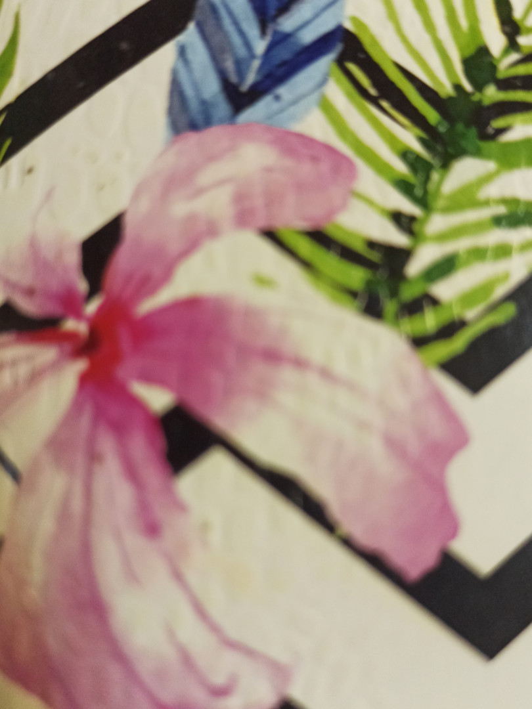

Не ведите охоту на мужчину
Кто охотник: мужчина или женщина?
Эта статья в основном для женщин, но если мужчины заинтересовалиьс, то может это переменит ваши взгляды на отношения и женщин, так что читайте на здоровье.
Начну, пожалуй, с обращения к женщинам: НЕ ПОМОГАЙТЕ МУЖЧИНЕ СЕБЯ ЗАВОЕВАТЬ!
НИКОГДА!
Иначе это лишено всякого смысла. Это равносильно игре в шашки где мужчина играет всерьез, а женщина в поддавки. Так играть интересно только с маленьким ребенком, а не со взрослым мужчиной.
Вообще что это за женский ход - если найдешь меня, то я твоя, а если не знаешь где меня искать вот тебе адрес места где я буду тебя ждать пока не найдешь.
Ради чего вообще это: страх одиночества, страх не найти другого хорошего, страх возраста, страх осуждения?
Он же мужчина, он же должен завоевать, значит надо ему помочь, вдруг у него не получится и он уйдет к другой, более доступной.
Милые девушки, если он меняет вас на более доступную, сделайте выводы что он ищет не бриллиант, а приасвальтный булыжник. Не снижайте своих ценностей, если он не готов ждать вас, добиваться и уважать, то это просто не ваш мужчина.
Не влюбляйтесь в эпатажную внешность с пустой душой; не ищите ему оправданий, если он не выполняет обещаний; не помогайте себя завоёвывать.
Считается что женщина любит ушами, мужчина вешает лапшу, а мы верим, но если слова не подкреплены делами, пора эту лапшу перематывать на его уши и желая приятного аппетита, показать ему направление движения в противоположную от вас сторону.
Сейчас такое время, когда говорят что женщина должна проявлять инициативу и завоёвывать мужчину сама. Я тоже не была исключением и могу сказать что это не чем хорошим не закончилось.
Брать быка за рога и тащить его за эти рога под венец удел коров ( простите за метафоры). Может начнем ещё и цветы им дарить? Или сами покупать себе подарки давать ему и ждать когда подарит, а то ему некогда и додуматься он не может, что девушке будет приятно получить маленький сюрприз. А в кафе платим пополам или полностью сами? Ну да... У него же финансовые трудности, а у тебя три работы и две подработки, а между ними уход за собой, уборка в доме и ещё куча свободного времени на фриланс для покрытия его расходов.
Это только мне кажется немного странным?
Многие мужчины уже и не пытаются завоёвывать. За них уже воюют, в километровую очередь. А он лежит на диване, почёсывает свой пупок и ничего не делая живёт хорошо за женский счёт.
Мы создаём видимость будто нас завоевали, а внутри то что-то гложет?
Ага... Неудовлетворение собой, неудовлетворение своими заниженными ценностями, неуважение к себе.
Если мужчина не звонит, не приходит, не может найти время для встреч, если он сомневается, не хочет семьи, говорит что сецчас не время, не надо искать ему никаких оправданий, не надо звонить самой, самой приезжать, самой куда-то ехать.
Если он хочет, будет все и все случится.
Я знаю мужчин, которые ночью с другого конца города приезжает и оказывают помощь. Я знаю мужчин, которые находят время и возможности. Таких мужчин великое множество, стоит только обернуться по сторонам.
Если он сомневается, вы ли женщина его мечты, не надо устраивать презентации себя, тестовые и пробные периоды и все остальное. Вы не товар, который надо продать любой ценой, любым макаром, как можно скорее и кому угодно.
Если он достаточно свободно или даже фривольно позволяет себе общаться с другими девушками, не надо устраивать за ним гонку, охоту или бороться за него.
Если он говорит что не готов к серьезным отношениям, не готов к женитьбе, то не стоит продолжать, не думайте что он завтра передумает. Не передумает, хоть узелком свернитесь, хоть готовьте ему яйца пашот и заливайте их соусом бешамель с соловьиными язычками, особенно если вы не знали о таком соусе, до того момента как познакомились с ним.
Он не дозреет и не передумает. Влечение мужчины со временем слабеет и если он в самой сильной фазе не готов к завоеванию, то потом он вас не сможет даже защитить. Он не будет готов никогда.
Не надо пытаться удерживать, зааоевывать, покорять и возвращать. Не нужно им помогать и поддаваться.
Ухаживая - это важный период для обоих. Женщина в это время закладывает фундамент своего женского достоинства в браке, мужчина - фундамент ценности этих отношений.
Вы не можете делать абсолютно все за мужчину, да и не к чему это.
Ваша задача вдохновлять, чтобы ему хотелось ради вас сворачивать горы; ехать на другой конец города, чтобы иметь возможность вас увидеть; звонить вам чтобы вас услышать;
Горел желанием жениться на вас; чтобы другие женщины перестали для него существовать; чтобы рядом с вами он становился настоящим мужчиной, сильным и уверенным.
Выбросьте из своей головы мысли о том как его покорить, покорять его вы будете после свадьбы и совсем для других целей. Не думайте о том как вернуть или отбить, как соблазнить и женить на себе этот брак будет обречён, а вы несчастны.
Это не те мысли которые должны заполнять голову прекрасной девушки. Ваша задача стать такой, которую захочет взять в жены каждый. И этот самый каждый должен будет доказать, что он самый лучший и никак не иначе.
Тот кто хочет, найдет возможность, кто не хочет найдет причины. Это его, мужское дело проявить инициативу, это его дело завоевать вас, это его дело доказать вам. А наше женское дело вдохновлять на подвиги и позволять себя завоёвывать снова и снова. Чтобы было чем любить.
И только тогда все будут счастливы!